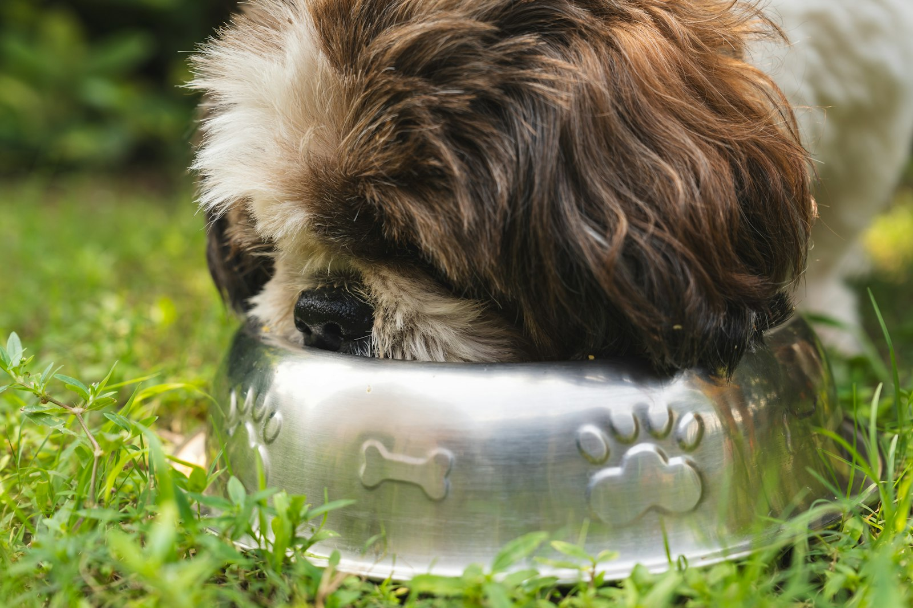
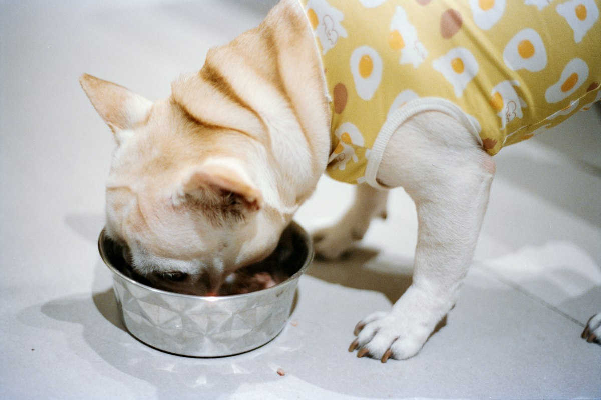
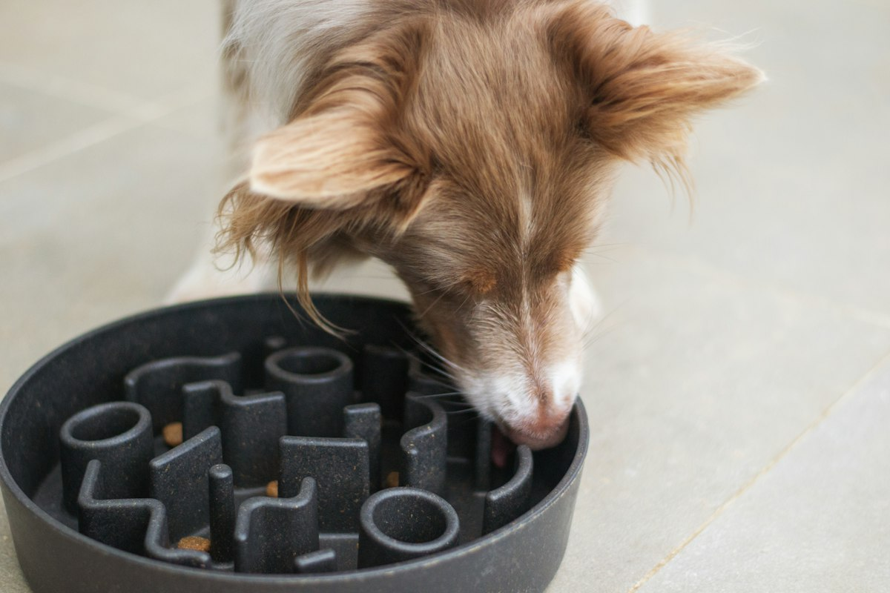

5 things to know if your dog inhales dinner in 30 seconds
Fast eating is more than bad manners. Here's what vets and one large study say, and a simple bowl that slows them down.

Photo: Gayatri Malhotra / UnsplashYou put the bowl down, turn around to wash the scoop, and it's already empty. Sound familiar? For a lot of dogs, dinner is a race. For some, especially big dogs, how fast they eat may matter for their health.
-
01
Speed is linked to a serious stomach problem
A study following 1,637 large and giant breed dogs found that dogs that ate faster had a higher risk of bloat (gastric dilatation-volvulus, or GDV), where the stomach fills with gas and can twist.1
That study only looked at large and giant breeds, so it doesn't prove the same for small dogs. But fast eaters of every size are the ones owners most often ask about.
-
02
Bloat is an emergency, not a tummy ache
The American College of Veterinary Surgeons calls GDV a rapidly progressive, life-threatening condition that needs immediate medical attention.2
Not medical adviceIf your dog has a swollen belly, retches without bringing anything up, or seems restless and in pain, call a vet or emergency clinic right away. No bowl replaces that. -
03
One big meal a day may not be the best plan
The same vet group links GDV with rapid eating of large meals and with dogs fed one large meal a day. Its advice after treatment includes splitting food into several smaller meals.2

Photo: Zhen Yao / Unsplash -
04
Raised bowls aren't the fix many people think
Raised feeders are often sold as "better for digestion." In the large-breed study, though, a raised food bowl was linked to a higher risk of bloat, not a lower one.1
Fig. 1 Share of bloat cases the study linked to a raised bowlLarge breeds~20%Giant breeds~52%0%50%100%Source: Glickman et al. 2000, 1,637 dogs from 11 large and giant breeds.1 A link, not proof of cause. -
05
A maze bowl turns a 30-second gulp into a game
Slow-feeder bowls use ridges and channels so your dog has to work around them to reach the food. It's a simple way to slow down a speed eater, and it sits on the floor, not on a stand.

FeaturedPace Maze Bowl
- Design Maze ridges that slow each bite
- Base Non-slip, sits on the floor
- Sizes Medium and large dogs
- Cleaning Dishwasher safe
Regular bowl Raised bowl Pace Maze Bowl Slows eating No No Yes, maze ridges Sits on the floor Yes No Yes Keeps dogs busy No No Yes Get the Pace Maze Bowl →30-day returns · Free US shipping
Make dinner last longer than a sneeze
Pace Maze Bowl, $29 (was $39). Bundles for multi-dog homes.
Sources
- Glickman LT, Glickman NW, Schellenberg DB, Raghavan M, Lee T. Non-dietary risk factors for gastric dilatation-volvulus in large and giant breed dogs. J Am Vet Med Assoc. 2000;217(10):1492-9. PubMed 11128539
- American College of Veterinary Surgeons. Gastric Dilatation-Volvulus. acvs.org
This is a paid advertorial. The Good Pup Journal may earn a commission from purchases made through links on this page. The Pace Maze Bowl is a feeding bowl, not a medical device, and is not proven to prevent bloat or any other condition. Always talk to your vet about your dog's health.